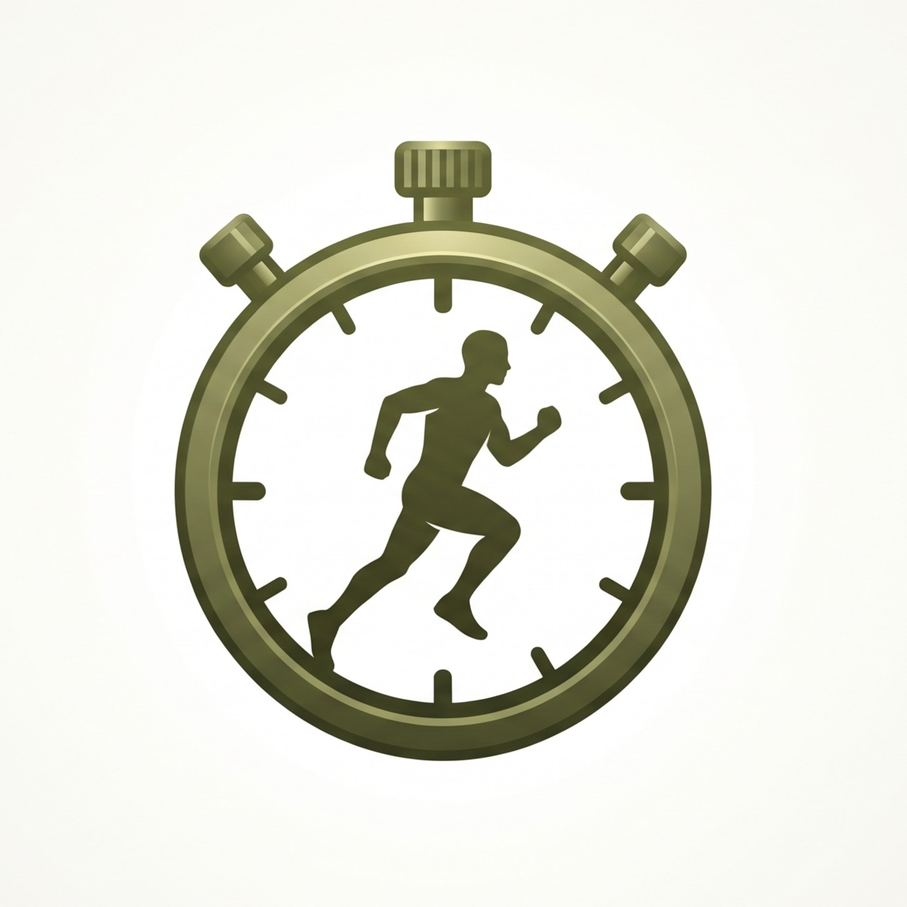

הסבר קצר על האפליקציה, בלי מילים טכניות
בר-אור היא אפליקציה לצוערי קורס קצינים. הצוערים מתעדים בה את תוצאות הכושר שלהם ורואים אם הם מתקדמים. המפקדים מקבלים תמונה ברורה של המחלקה ושל הקורס, במקום לאסוף תוצאות בנפרד מכל צוער.
האפליקציה נפתחת בדפדפן של הטלפון, בלי התקנה, וכתובה בעברית מימין לשמאל. היא עוסקת בשני בוחנים בלבד: ריצת 3 ק"מ ושכיבות סמיכה.
צוער שזקוק להקלה או לפטור (למשל בגלל פציעה) מגיש בקשה באפליקציה. עד שראש הקורס מחליט, הבקשה ממתינה ואינה משפיעה על שום דבר.
לכל תפקיד יש מסך משלו, והגישה לנתונים מוגבלת לפי הצורך
| תפקיד | מה רואה | מה עושה |
|---|---|---|
| צוער | את התוצאות וההתקדמות של עצמו בלבד. | מזין תוצאות, מגיש בקשות הקלה ופטור, מוריד את המידע שלו, מוחק את החשבון. |
| מדריך (מ"מ או מ"כ) | את המחלקה האחת שלו בלבד. בכרטיסים מופיעים רק שמות. התוצאות של צוער נפתחות בלחיצה על שמו. | קורא בלבד. מוסיף צוער רשום לפי כתובת, ומבקש עריכה, העברה או הסרה (הפיקוד מחליט). מ"מ גם מציע מ"כים למחלקה (עד חמישה) ויוצר קישור הצטרפות. |
| ראש הקורס וסגנו (מ"פ וסמ"פ) | שלושה עמודים: סיכום פיקודי (לוח בקרה של כל הקורס ותוצאות לפי מחלקה, ופרטי צוערים בשמם כשצריך), בקשות, ועוד (דוחות, חשבונות, טיפים ופרופיל). | מאשרים או דוחים בקשות, מעניקים תפקיד מדריך לחשבון רשום, מעבירים ועורכים צוערים, ומקבלים דוחות מצטברים. |
| מנהל מערכת | שני עמודים: ניהול הרשאות וצוערים, ובקשות. אינו רואה את לוח הבקרה, מסך מחלקה או תוצאות. | בדיוק שניים, ונוצרים רק בכלי של מפעיל השרת. מעניקים תפקידים, מעבירים ועורכים צוערים, פותחים מחלקות ומשחררים כתובת דואר. |
בסרגל העליון של ראש הקורס ושל מנהל המערכת יש פעמון עם מספר. לחיצה על פריט בו מובילה ישר לעמוד הבקשות ופותחת את הקבוצה הנכונה: בקשות הקלה או פטור, בקשות מחיקה של הקלה, ובקשות לשינוי צוערים (העברה בין מחלקות, עריכת פרטים, הסרה מהמחלקה והצעת מ"כ). כל כרטיס אומר בפשטות מה מבקשים, מה השתנה ("לפני ← אחרי"), מי הגיש, ומה יקרה באישור. כל החלטה נרשמת, ואישור מינוי מ"כ דורש לסמן שהזהות אומתה מחוץ לאפליקציה.
ראש הקורס מקבל דוחות PDF בלי שמות: שבועי (כל יום חמישי) וחודשי (ביום האחרון של החודש), ואפשר גם להפיק לפי דרישה דוח של 30 הימים האחרונים או דוח לטווח תאריכים שבחרתם, עד חמישה חודשים. קבוצות של פחות מחמישה צוערים לא מוצגות כמספרים, ואין סיכום של "כולם".
מה נשמר, מי רואה, ומה עדיין פתוח
ההרשמה פתוחה, ולכן יש מגבלות: טופס עם מלכודת לבוטים וזמן מילוי מינימלי, הגבלת ניסיונות הרשמה והתחברות לפי כתובת ולכל האפליקציה, תקרה של 120 הרשמות חדשות בשעה, ומתג חירום שסוגר את ההרשמה. מכיוון שאין אימות כתובת דואר, מישהו יכול להירשם עם כתובת של אחר. לכן אף תפקיד פיקוד לא ניתן אוטומטית: כל הענקה דורשת אימות זהות של האדם מחוץ לאפליקציה.